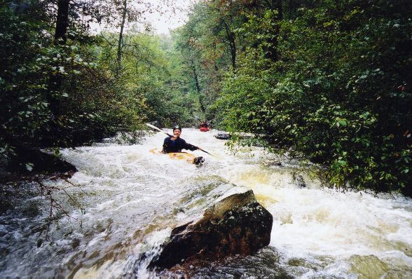
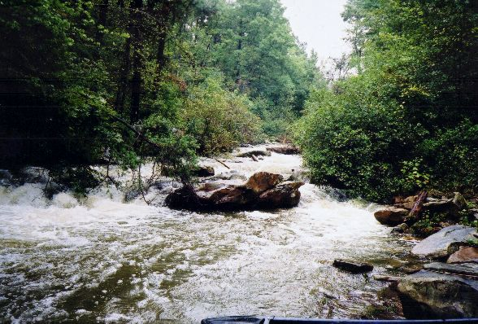
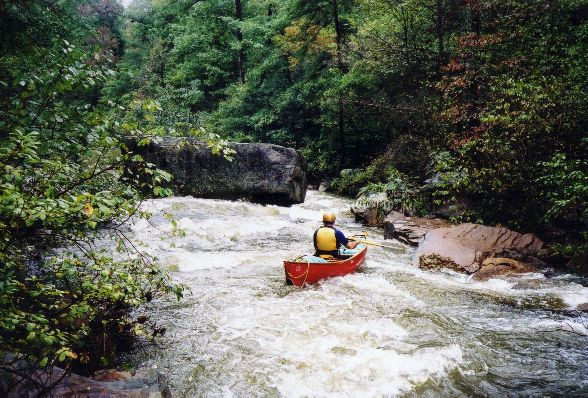
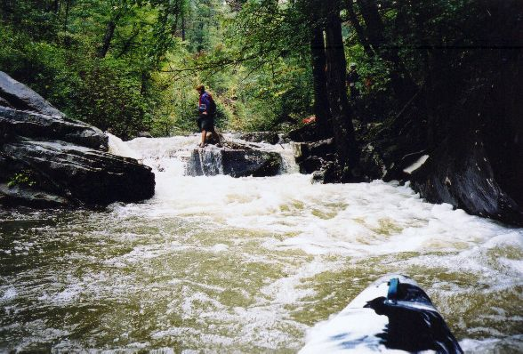

|  |
The beginning of the upper part gets intimate
with the trees on the bank, which crowd and overhang the stream. |
|  |
Here you have a choice between the overhanging
tree and the side of a tree.
|
|  |
Heading to the right of a big rock in
the middle of the stream bed.
|
|  |
This was the most difficult rapid at about
4" on the river right CR275 gage. A good lean as you deflected off
the boulder the water slams into is required. The wall on river left
in front of the bow in this picture is undercut, to add a little penalty
term to the equation. Not all lines were clean on this run.
|